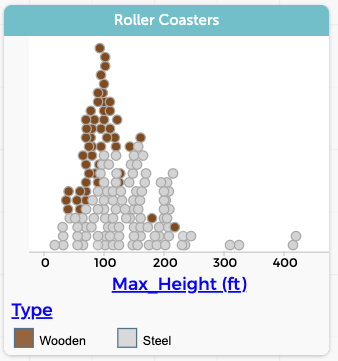
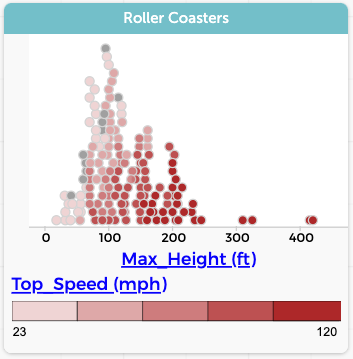

13 Grouping
Grouping is a fundamental intellectual activity. One of the first things babies learn to do that smells at all like math is to sort things into piles according to some criterion: blue or red; triangles, circles, and squares; food and not-food. In identifying people, one of the first attributes we learn is gender: is it a boy or a girl?
We are, as a society, gradually learning that gender need not be binary, that is, it may not be two simple categories where everyone is either one or the other. But with apologies to our non-binary, intersex, or agendered siblings, a lot of public data and a lot of analyses treat gender as if it were binary.
In data science, grouping is a core data move. We often group data, especially in order to compare those groups. Sometimes, there are only two groups; sometimes there are more. If you are investigating whether going to college affects your income, you might separate people into two groups: those who have been to college and those who have not. That’s two groups, a binary classification. But if we’re comparing income by State, we might place our people in 51 groups—one for each State plus the District of Columbia.
Once we do that, we’re likely to make some calculation about each group, for example, the median income. In this book, we consider that calculation a different data move, summarizing. You’ll read about it in its own chapter.
Here, we will just talk about how to group data in CODAP, and what grouping helps you do. Most of the techniques are simple and intuitive; you might not even think of them as grouping. But the last one, dragging in the table is the least intuitive— and the most powerful.
We commonly use the word sort to describe the process of putting items into groups: “Sort your clothes into whites and colors.” In some computer environments (such as CODAP), though, sort means something else: putting the items in order, as in “Sort these alphabetically.” It appears in the menu for each attribute, too: Sort Ascending and Sort Descending.
In this book, I will try to be picky about this vocabulary, to avoid confusion. After all, sorting is a useful move in its own right.
13.1 Using graph axes
The simplest way to group cases in CODAP is to use a graph. When you drag a categorical attribute to an axis, CODAP separates the data into groups—one for each category— and plots them separately in parallel graphs.
For example: if there is a continuous attribute on the other axis, you get parallel dot plots; this lets you compare the distribution across the different groups.

In the illustration, Education is the categorical attribute; it has six categories (graduate, etc.), so we have split the data set into six groups. These appear as six parallel dot plots of TotalIncome, the numeric, continuous attribute.
13.2 Using legends
Dragging an attribute to the middle of a graph (a.k.a. plopping) colors the points according to the value of that “legend” attribute. A legend appears on the graph so you can decode the colors. If the legend attribute is categorical, the colors are distinct. If it’s numeric, you get a gradient of colors that separate the data into quintiles, that is, CODAP groups the data into five categories by value. If you click on the gradient or on the little paint chips in the legend, you select all of the points in that group.
This is a subtler form of grouping; the cases don’t move into separate zones in the graph, but the colors and/or selection help you see the properties of that group alone (which is filtering, in a way, right?) or compare that group to others.

height, grouped by coaster type. We can see that, generally, steel coasters are taller.
speed. Because speed is numeric, we get a gradient—actually, five bins—that show us that taller coasters are faster.By the way: the gray dots in the speed graph are cases for which the value of speed is missing.
Don’t forget that if you have a legend, you can select cases by clicking boxes in the legend itself.
13.3 Binning
If you have a graph with a numeric axis, you can group the data into bins. This is easier to do than to explain.
The live illustration below has a dataset with 1000 people from the 2017 American Community Survey. We have already made a graph of Age. Do the following:
- Select the graph so its palettes appear on the right.
- The fourth one down shows a little graph. Click it. The Configuration inspector appears.
- Click the checkbox for Group into Bins. The points group into bins, probably 20-year spans.
- Get the configuration inspector again; more controls have appeared. Change the bin width to 10. Press tab to make the graph change.
- Click the checkbox for Fuse Dots into Bars. Oooooh! Sometimes you will want the dots fused into bars; other times you won’t.
Think: what can you tell about the people from this graph alone? Is it easier or harder than with the plain dot plot, ungrouped, un-fused?
Let’s see how else we might use such a graph.
- Plop
Marital_statusinto the middle of the graph.
Aha. You can see, in the bars, the distribution of marital status in each age range.
Explore!
- What do you see when you plop different attributes onto the graph?
- Un-check Fuse Dots into Bars and/or Group into Bins. What helps or obscures any relationships you see with the plopped attribute?
Bin labels You probably saw that the labels for the bins are something like [10–20) and [20–30). Notice the difference between the brackets [ and parentheses ). That’s a common notation that means, “from 10 up to but not including 20,” then “from 20 up to but not including 30,” and so forth. As of this writing, there is no way to use those labels anywhere else, for example, as category labels.
13.4 Grouping in the table
You learned this already in the chapter where you calculated the mean heights of males and females at each age. You split the dataset into groups by dragging the “grouping” attribute (Age, and then Gender) leftwards in the table. You get one group for every value in the grouping attribute. So if you drag Gender, you get a group for males and a group for females. If you drag Age, you get one group for each age. And if you drag them both, you get a group for each age-gender combination.
The groups collect together in the right-hand table, and are connected by the curvy lines to the values on the left. The calculations (e.g., mean(Height)) at the “upper level” apply separately to each group. If you don’t remember that, or you missed it, go back and do it now.

In the illustration above, we have selected the Saturday, and so all four data points “within” Saturday get selected.
Which attribute should you drag left?
Dragging left to group is not immediately intuitive. We all make many mistakes when we’re learning what to drag. You will learn a lot by trial and error; fortunately, errors are easy to fix. Just use Undo—or simply drag the attribute back over to the right.
Here are some things to think about:
The attribute to drag is almost always categorical. An exception we used with our height investigation was
Age. It’s numeric, but it acts categorical. We made a group out of each age.The values in that attribute’s column are the labels of the groups. Suppose you want to study education. Look for the column with names for the groups you want. When you see stuff like
high schoolandsome college, that might be the one.If you see a lot of duplicate values in a column— like lots of 12-year-olds, or lots of people with bachelor’s degrees— that column might be a candidate for grouping.
Suppose you know what groups you want, but you don’t see the right attribute. For example, you want to group people by decade— you know, people in their twenties, thirties, forties, etc.— but you only have whole-number ages. Then you need to check out the “Calculating” chapter; you need a new column with the decade, which you can make either before or after you group.
13.5 Commentary
We’ve expended so much effort describing how to group cases in CODAP, let’s step back a moment and remember what grouping is for. Grouping has at least two purposes:
- Grouping makes it easy to tell which cases are in which groups. So we often group before we filter, in order to make it easy to select the entire group—and filter it in or out.
- Grouping makes it possible to perform summary calculations, for example, means, in order to compare groups to one another.
In addition, we sometimes just group and don’t explcitly do anything else. We compare the groups, often visually in a graph, making our own private, implicit summaries.
Vocabulary Earlier in our thinking, we talked more directly about how the CODAP drag-left-to-group move changes the data. We described it as reorganizing the data set or making hierarchy. We could also have called it classifying. Those terms are okay, but grouping is much more accessible.
Are there examples of reorganizing that are not grouping? Sure: sorting, for example, alphabetically. And more esoteric reorganizations include transposing a dataset—which is beyond the scope of a gentle introduction to data science.
Grouping and filtering Maybe this is too esoteric, but consider: grouping is really a way to do a lot of filtering at the same time instead of sequentially. For example, grouping by marital status is kind of like filtering for “never married,” then for “married”, etc., all the way to “widowed.”
One thing that makes grouping different is that, the way we are using the term, grouping is (mutually) exclusive: every case is in at most only one group in a set. (Cases with missing values might not be in any group.)